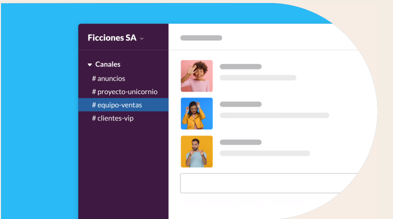
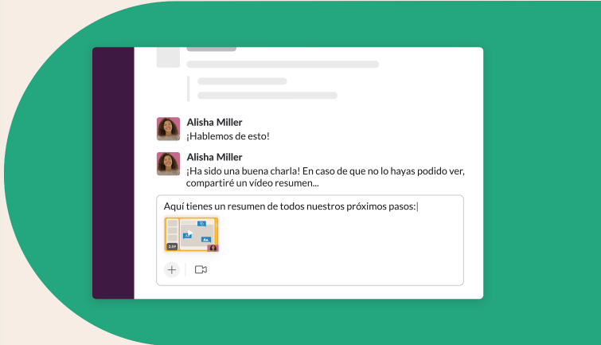
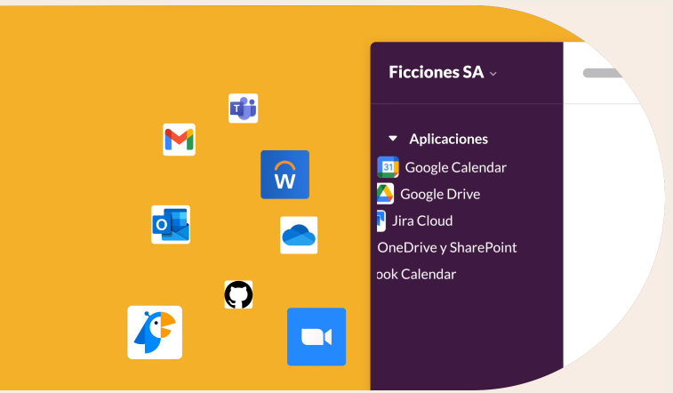

EMPRESAS DE TODO EL MUNDO YA CONFÍAN EN SLACK
Reúne a tu equipo Los canales son el corazón de Slack. Son espacios organizados para todo el mundo que contienen todo lo necesario para trabajar. Los canales permiten conectarse entre departamentos, oficinas, zonas horarias e incluso con otras empresas. Obtener más información sobre los canales
Selecciona cómo quieres trabajar Slack te otorga la flexibilidad para trabajar cuando, donde y como tú quieras. Puedes chatear, enviar clips de audio y vídeo o unirte a una junta para discutir asuntos en directo. Obtén más información acerca de la comunicación flexible
Agiliza el trabajo con todas tus herramientas en un mismo lugar Conectar tus otras aplicaciones de trabajo con Slack te permite ahorrar tiempo al no tener que cambiar entre pestañas. Además, con herramientas eficaces como el Creador de flujos de trabajo, puedes automatizar tareas rutinarias. Más información sobre la plataforma de Slack